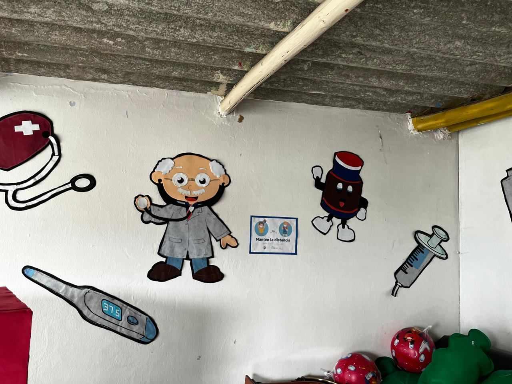

Ofrecer un servicio de cuidado, desarrollo y estimulación infantil de calidad, respetando a cada uno de los niños en su crecimiento físico, psicosocial y espiritual, en un ambiente inclusivo el cual favorezca la comunicación, las relaciones sociales y la práctica de los valores humanos.
Ser un Centro de Desarrollo Infantil Integral que complemente al hogar, siendo un sitio seguro e ideal para crecer, promoviendo al niño y la niña de todos los estímulos, favoreciendo su desarrollo integral y preparándolos de manera sólida con experiencias favorables para la próxima etapa de educación.